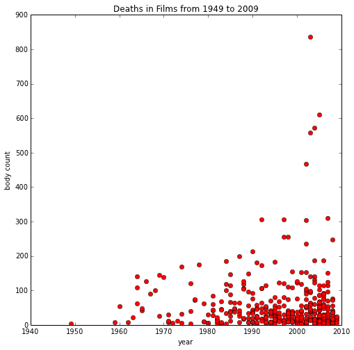
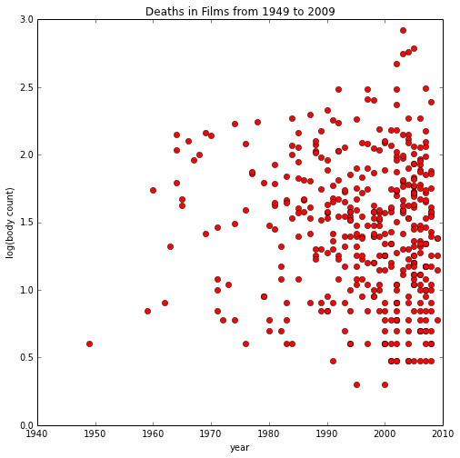

ambassadors14
Sheffield Computer Science 2014 Cutler's Ambassadors Programme for Schools
Learning from Data: Movie Recommendation in the IPython Notebook
A Lab Class for the University of Sheffield Department of Computer Science Ambassadors' Scheme
Neil D. Lawrence and the Sheffield Machine Learning Research Group
8th October 2014
This notebook has been made available as part of our Open Data Science agenda. If you want to read more about this agenda there is a position paper/blog post available on it here.
This session is about 'learning from data'. How do we take the information on the internet and make sense of it. The answer, as you might expect, is using computers and mathematics. Luckily we also have a suite of tools to help. The first tool is a way of programming in python that really facilitates interaction with data. It is known as the "IPython Notebook", or more recently as the "Jupyter Project".
Welcome to the IPython Notebook
The notebook is a great way of interacting with computers. In particular it allows me to integrate text descriptions, maths and code all together in the same place. For me, that's what my research is all about. I try to take concepts that people can describe, then I try to capture the essence of the concept in a mathematical model. Then I try and implement the model on a computer, often combining it with data, to try and do something fun, useful or, ideally, both. Today we'll be looking at recommender systems.
Recommender Systems
Do you watch Netflix? Have you ever rated a movie there? Do you buy books or electronics on Amazon? How about grocery shopping? All these companies want you to buy more, watch more or listen more. The best way of getting you to do that is by showing you more of what you like. But what do you like? What sort of person are you? Can the computer tell? It can certainly try! And it does so with a "Recommender System". Recommender systems are so important to Netflix that they offered a $1 million dollar prize for improving theirs.
What is a Recommender System?
To understand you the computer has to turn you into a series of numbers (but don't worry, it's not painful), to perform computations we need numbers. How many numbers does it need to describe you? How many numbers does it take to summarize anyone's tastes in movies, music or groceries? These are open questions that can be difficult to answer. It depends how much we want to know about you: if it's just your taste in film and clothes that's one thing. If we want to summarize your state of health, that's another. Apparently a three year old's brain has $10^{15}$ synapses in it: a synapse governs the connection between neurons. It's quite possible that each synapse needs a number to represent it. So in the end it takes a lot of numbers to represent just the brain of a human, and that's before we start talking about what's going on in each of your cells.
We won't try to represent all this, instead we will perform a 'compression' on you. We will try to represent your opinions about films into just a couple of numbers. We are going to work with movies, and just for fun, we thought we'd get you to rate some movies and try and build a recommendation system.
Preparation
First things first. You need to have a gmail account you can use (we're going to use this to find out what movies you like). And I need to know what your gmail account is, so that I can share some movie information with you for you to rate.
Please click on this link and fill in the form to record your details.
Once we have your details, the next thing we need to do is download some data! The next bit of software downloads some of our code from a version control system called github. Github is a place for keeping software, that allows us to update the software and keep track of changes. Every time I make a change to the software, I update it on github and share it with my friends and colleagues.
To obtain our software from github you'll need to run the code in the next box. To do this you need to click on the box and press either CTRL-Enter or SHIFT-Enter (see if you can tell what the difference is between these two commands). The code below downloads the software in a zip file format, unzips it, and then adds the software to the python's path where the software can be easily loaded in with an import command.
# this python code downloads some of my research groups software from the web
# first use the urllib library to download the zip file from github.
import urllib
urllib.urlretrieve('https://github.com/sods/ods/archive/master.zip', 'master.zip')
# now use the zip file library to unzip the software
import zipfile
zip = zipfile.ZipFile('./master.zip', 'r')
for name in zip.namelist():
zip.extract(name, '.')
# finally use the sys library to add the location of the new software to the python
# path, where it will be found by the computer.add the module location to the python path.
import sys
sys.path.append("./ods-master/")
Note that python, like many other programs, has a lot of software libraries for doing different things. Here we used three separate libraries (which we also loaded into the computer with the import commands) to perform three different jobs. And the software we downloaded will also be available in the form of ... you guessed it ... a library. In this case a library that we've written in Sheffield called pods. In the next section we load in the library and use it to download some data for analysis.
Note, that the next step won't work unless you've run the code for the previous step! That's because when running code in the notebook, the python kernel (which is the software in the computer that's running the python code) has a state. By state we mean the values of the different variables in the system. The values of these variables can have a lot of effects, like which program code is in memory, and therefore accessibile to the computer. By running commands in this notebook, we change that state of the computer all the time. The software below relies on the software above being run to work. The notebook lets you know which box was run when by placing a number beside the box. After the code's been run you should see a number like:
In [3]:
if it was the third box to be run. Or In [2]: if it was the second (etc.).
Whilst the notebook is waiting for the kernel to run commands, you will see In [*]: as the prompt. If this happens for too long, it may be that you've asked the computer to do something too complicated and it's getting slow. You can interrupt the kernel by selecting Kernel->Interrupt from the menu in the browser window above. If you get really confused about what's going on and want to wipe the state of the kernel clean, then you can select Kernel->Restart. That will reset the kernel's state.
Download the Movie Body Counts Data
We are going to download some data on 'movie body counts'. I like this data, not because of all the bodies, but because there is so much you can do with it. However, I wasn't the first to get this data set together. That was done by some researchers at NJIT who combined data from the IMDb website and www.MovieBodyCounts.com. Let's pause a minute and reflect on that. The data set was created by someone else, who themselves built on the work of many others. If I could summarize the internet in one idea, that might be it. The internet is just a really great way of sharing stuff really quickly. And if someone does something cool (like IMDb) , it's easy for someone else to build something on top of it. And it all works best when we are happy to share things. So openness is good! However, openness is not always good and we'll discuss some of the downsides later on. I'm getting you all to share information with me about what movies you like. That's personal information, it's probably not the most sensitive personal information, but it's personal all the same. That means I have to be careful how I handle it. When you share things on the internet, you are giving something away, although very often you will get something back (like a cool social network, or a neat recommender system). But you always have to think about how good a deal you are getting. Anyway, for the moment let's just enjoy all that sharing that others have done and download the 'Movie Body Count' data set.
When you press SHIFT-enter or CTRL-enter for the next part you will get told that you are about to download data from a github repository. This is just done to give credit to the people who kindly shared their data with us (giving credit to people makes them happy to continue sharing, so this is a very important thing to do). You can have a quick read of what it says, and then just type yes and press enter. It will only do this the first time you download the data to this computer, after that it is saved on your disk.
import pods # Our software for python open data science (pods)
import pandas as pd # the pandas library for data analysis
d = pods.datasets.movie_body_count()
movies = d['Y']
Playing with the Data
Now we definitely can't download some data about movie body counts without having a bit of a 'play around' with the data. And in fact, that's exactly what the IPython notebook is good for. Talking and thinking about data is all very well, but there is no substitute for getting a feel for the data by plotting and exploring the data: playing with it.
To help us play with the data we've used a special python data library called pandas. That means we can refer to it in some neat ways. In particular, we've loaded in the data from disk and placed it into a variable called movies. That is a pandas data frame. The data frame allows us to refer easily to the different parts of the data by writing:
movies.Year
and
movies.Body_Count
With luck it should be clear from the syntax of these commands what they are referring to. A well designed library (or language) makes it easy for you to understand what is being done to the data through the use of good syntax. You might not (yet) think that it is easy to understand what's going on in the code boxes, but with a bit of playing around I think you'll get there! One reason I like python is that the syntax is flexible and often readable, especially when compared to languages that came before it like perl, although you can write some nice poetry in perl, check out this example, isn't it romantic? Enough of romance! Let's return to movie body counts.
Below we will plot the year of the movie against the body count. I've separated the line that does the plotting from the other lines to try and make it clearer. It's interesting that when doing data science it often takes more lines of code to do the visualization (plotting and other stuff) and the loading in of the data than to do the actual analysis! However, a lot of thought has to go into the lines which do the analysis, which just shows that it's quality not quantity that counts.
# this is an 'IPython magic' command that makes plots appear in the notebook.
%matplotlib inline
# we import this library for plotting, we use it to create a scatter plot of 'body count' per film per year.
import pylab as plt
fig, ax = plt.subplots(figsize=(8,8)) # create an axis to put the plot on.
ax.plot(movies.Year, movies.Body_Count, 'ro') # plot the bodies vs the year.
plt.xlabel('year') # always label your axes!
plt.ylabel('body count')
plt.title('Deaths in Films from 1949 to 2009')
<matplotlib.text.Text at 0x10dff43d0>

Good heavens that's ugly! Not the fact that so many people are dieing in the films, but the fact that so much of the data is squashed down at the bottom of the y axis. That's because in one film a whopping 827 people seem to have died (can you guess what film that is?). When you see data like this one solution is to plot the logarithm of the deaths. Have a think about why this might be a good idea (hint it's because things get better ... not worse ... but why do they get better?). Let's plot it again, but with log deaths on the $y$ axis.
import numpy as np # we need the numpy library for the logarithm
fig, ax = plt.subplots(figsize=(8,8)) # create an axis to put the plot on.
ax.plot(movies.Year, np.log10(movies.Body_Count), 'ro') # plot the bodies vs the year.
plt.xlabel('year') # always label your axes!
plt.ylabel('log(body count)')
plt.title('Deaths in Films from 1949 to 2009')
<matplotlib.text.Text at 0x10eb03810>

That's better! Note that whilst before it looked like the average number of deaths in films may have been going up, now it doesn't seem to be the case, it just looks like we have more films being made today than in 1949, but when we look at the average of the logarithm over time, it looks like it might be just about constant (it's actually hard to tell ... but I'm not sure I'd bet either way). This can be very important. These are just film deaths, but we might be looking at real deaths due to a new disease. Understanding if the disease is on the increase or if it's just a population increase is an important distinction.
Let's have a quick look to see what the most death-filled film is.
# this command will sort movies by the 'Body_Count' column in descending order (ascending=False)
movies.sort(columns='Body_Count', ascending=False)
Keep on Playing
You can use the box below to have a bit of a play with the data. There are other snippets of information about the film available, you can try movies.columns to see what they are. Then you can try movies.Director, movies.IMDB_Rating, movies.Length_Minutes. Do you think you can manage to plot the IMDb rating against the movie length and see if you can find any correlation? How about movie length and body count? You can cut and paste from the examples above into the box below.
Recommendation in Numbers
Before we got distracted counting bodies, I said that we need to reduce everything to numbers for recommendations on the computer. Let's think about what those numbers could be. A recommender system aims to make suggestions for items (films, books, music, groceries) given what it knows about users' tastes. The recommendation engine needs to represent the taste of all the users and the characteristics of each object. That is what our numbers should do.
One way for organizing objects is to place related things close together. You can spend a lot of time doing this when you are supposed to be revising. It's called tidying up. Tidying up can be quite important, for example in a library we try and put books that are on related topics near to each other on the shelves. One system for doing this is known as Dewey Decimal Classification. In the Dewey Decimal Classification system (which dates from 1876) each subject is given a number (in fact it's a decimal number---no surprises there!). For example, the fields of Sciences and Mathematics are all given numbers starting in the 500s. Because computers weren't around in 1876 (well a man called Charles Babbage was toying with the idea ... and a lady called Ada Lovelace was even thinking about programming languages but no one had actually built a computer) ... anyway as I was saying, because computers weren't around in 1876 they didn't get a number so they ended up being given numbers staring with 004. For example, works on the 'mathematical principles' of Computer science are given the series 004.0151 (which we might normally write as 4.0151, but when you think about it we could equally write 004.0151). Whilst it's a classification system for splitting books into groups (this is sometimes called a taxonomy) the books in the system are also normally laid out in the same order as the numbers. Ah ... back to the point numbers.
So in the Dewey Decimal system we might now expect that neighbouring numbers represent books that are related to each other in subject. That seems to be exactly what we want for our recommender system! Could we somehow represent each film's subject according to a number?
The problem here is that we are representing it with only one number, a so called one dimensional representation of the system. Actually a one dimensional representation of a subject can be very awkward. To see this, let's have another think about the Dewey Decimal system. However, this time we can think about subjects which have numbers in the 900s. By the way, I'm not an expert on the Dewey Decimal system, I just read the Wikipedia page on it and then found a list of the numbers from Nova Southeastern University ... I may be a bit geeky, but memorizing the Dewey Decimal numbers is a step too far for even me (and don't memorize $\pi$ either, memorize $\tau$ instead ...).
Anway, back to those Dewey decimals ... if we look at the list for the 900s from the link above, we see that whilst the ordering for places is somewhat sensible, it is also rather arbitrary. In the 940s we have Europe listed from 940-949, Asia listed from 950-959 and Africa listed from 960-969. That seems OK, because Asia borders Europe, and Africa borders Asia (sorry I've slipped into a Geography lesson here ...). But it's also true that Africa is very close to Europe and the Carthagian's had an empire that went across both ... add did the Romans (a bit of History thrown in too).
 A map of the Carthagian Empire from Wikipedia. Hannibal famously took his African elephants from the purple bit, through Spain, and over the Alps to take the Romans by surprise in the red bit. It did surprise the Romans, but perhaps not as much as it surprised the elephants.
A map of the Carthagian Empire from Wikipedia. Hannibal famously took his African elephants from the purple bit, through Spain, and over the Alps to take the Romans by surprise in the red bit. It did surprise the Romans, but perhaps not as much as it surprised the elephants.
Where should those books go? If they went between Africa and Europe they'd end up in Asia ... which would be wrong. Ah! But that's easy to solve, let's just represent the subject by two numbers and then we can lay out the books like a map!
Inspired by the map example we can start considering how we might lay out films in two dimensions. Although we also would like to characterize people too ... maybe we could also make a map of people's interests. In fact maybe the map could be a map of the same space. Let's think of it as a film library ... then the people could sit near the films they were interested in. We would have two maps of the same place. One of where the films are, and one of where the people are. People could sit near the films they like, and then they wouldn't have to move far to get the next film they'd want to watch (don't take the analogy too far though, if you start thinking about toilets and snack bars it kind of breaks down ... but fortunately we've turned you into a number now so you don't need the toilet or a snack bar).
That's it! We've cracked it ... or at least we've come up with one way of doing it. Although now, the fun just starts. Once you've had the idea, now you get to do the maths.
Vectors
Do you know about vectors? Vectors are great. Vectors are just a way of carrying a series of numbers about together. Not around town and to Meadowhall of course (even numbers don't like going to Meadowhall), but mathematically. I can represent lots of things by vectors, anything I can represent by numbers in fact. So since people can be numbers, I can represent people by vectors. This is not such a strange thing, and in fact it is being done to you all the time. If you use Facebook, they represent you by a vector (or actually more than one vector ... but all vectors can be returned to one vector at the end of the day ... have a think about why that is so). The vector that facebook have determines which items will come to the top of your news feed. It determines what adverts you see. It even determines who your friends are ... well actually that's taking it a bit far ... it just determines who Facebook suggests to you for friends.
Of course it's fun to represent people by numbers, if only to freak them out a bit, but in reality they don't do it for that reason. The vector Facebook stores about you is pretty important because it determines what your experience of Facebook is. If it's a good experience, then you'll go there and interact more ... if it's a dull experience you'll wonder off to WhatsApp or Instagram ... or maybe even Google+. If they get that vector right, they've captured something about your personality and they can create a better Facebook tailored for you.
When we write a vector down we do it like so: $$ \mathbf{v} = \begin{bmatrix}1\2\end{bmatrix} $$ That is a special container for 2 numbers, the numbers themselves are 1 and 2. Sometimes we write the vector like this: $$ \mathbf{v} = \begin{bmatrix}v_1\v_2\end{bmatrix} $$ where we are just saying the first number is given by $v_1$ and the second by $v_2$. Vectors are often used for speed (or more correctly velocity). So $v_1$ could be velocity in the Westerly direction and $v_2$ could be velocity in the Northerly direction. When people are piloting planes, they are often told they are being 'vectored'. It doesn't mean Facebook are turning them into a series of numbers (although Facebook probably are, that's just not what they mean on this occasion). It means that they are being told to go somewhere through a series of vectors.
I like $\mathbf{v}$ for vector so I'm going to use it to represent our films. Every film has it's own vector. But there are lots of films, so to avoid confusiong them we need to index our vectors. First we think that every film is given an index, $j$. Then the vector associated with the film is given by $\mathbf{v}_j$.
I'm going to do the same to you. And I'm going to use $\mathbf{u}$. I like to use $\mathbf{u}$ for you, and then index by $i$ for the users. So each user is represented by $u$ and indexed by $i$ like so: $\mathbf{u}_i$.
So now you are all $\mathbf{u}$s and films are all $\mathbf{v}$s we can think about how we pull together films and people.
If we have a movie rating, then we can represent it by $y$. That's easy, because it's just a number. But it's a number that is associated with a user and a film. That means it needs two indices: $i$ and $j$. One for the person and one for the film. So now we can represent all the ratings as $y$_{i,j}.
Dot Products
How do you multiply vectors together? One way is the dot product. If we take the dot product (or inner product) between two vectors then we simply take each of their corresponding elements, multiply them together and sum the result.
We now need a measure for determining the similarity between the item and the user: how close the user is sitting to the item in the rooom if you like. We are going to use the inner product between the vector representing the item and the vector representing the user.
The dot product between two vectors $\mathbf{a}$ and $\mathbf{b}$ is written as $\mathbf{a}\cdot\mathbf{b}$. Mathematically we can write the sum as follows: $$ \mathbf{a}\cdot\mathbf{b} = \sum_{i} a_i b_i $$
What's that got to do with recommendation? Well, the inner product can be seen as a measure of similarity. How so? Well one clever thing about the inner product that arises from trigonometry is that the inner product is related to the the cosine of the angle between the two vectors.
The smaller the angle between two vectors the larger the inner product. $$ \mathbf{a}\cdot\mathbf{b} = |\mathbf{a}||\mathbf{b}| \cos(\theta) $$ where $\theta$ is the angle between two vectors and $|\mathbf{a}|$ and $|\mathbf{b}|$ are the respective lengths of the two vectors. This diagram from Wikipedia illustrates part of what's going on:

Here we $A$ and $B$ as the vectors, we can think of $A$ and $B$ as two different people (traditionally we calle them Alice and Bob ... their nemesis is someone called Eve, but we don't need her today, so let's not go into that). The cosine is applied to the angle between the vectors (or people). Here the diagram illustrates that the cosine multiplied by the length of the vector gives the projection of one vector onto the other. This will be familiar to anyone who's had to work with 'resultant forces' in mathematics. Although in our case it's more like 'resultant personalities' or 'resultant tastes'. That would be the portion of Alice's tastes that is shared with Bob. We could construct a similar analagy for items, projecting one film or book onto another. Note that if the two items or users are in the same place ($A$=$B$), then for the purposes of our model they represent the same thing (or the same person).
So the cosine is important in our model, so let's plot it using the notebook. Again note that it takes more lines to do the plotting than it takes to compute cosine!
# plotting cosine
tau = 2*np.pi # tau is 2 times pi.
theta = np.linspace(-0.5*tau, 0.5*tau, 100) # this gives us 100 points in *radians* (in degrees they'd be from -180 to 180)
f = np.cos(theta)
fig, ax = plt.subplots(figsize=(12, 6))
ax.plot(theta, f, 'r-')
plt.xlabel('$\\theta$')
plt.ylabel('$\\cos(\\theta)$')
We can immediately see that if the angle is small, cosine will be big. If it is large, cosine goes negative (at 180 degrees cosine is -1). So a negative inner product is associated with a wide angle and a large inner product is associated with a narrow angle. If the angle is wide then the two points described by the vectors will be far apart. If the angle is narrow then the two points will be nearer to each other (assuming the lengths of the two vectors doesn't vary much between the two inner products).
In our library we want each user to be sitting near the items they like (or rate highly) so we want the inner product to be large if the rating is high and small if the rating is low. We can do this by trying to force the inner product $\mathbf{u}i^\top\mathbf{v}_j$ to be similar to the rating given by the user, $y{i,j}$. To ensure this we will use a sum of squares objective function for all user ratings.
The Library as an Infinite Plane
Let's imagine a library which stores all the items we are interested in, not just books, but films and shopping items too. Such a library is likely to be very large, so we'll imagine it on an infinite two dimensional plane (if your head starts hurting, stop imagining the plane and definitely don't think of a infinite plane in four dimensions, becaue that's more painful).
To recap, this means we can use numbers to represent the location of each item on the plane. For a two dimensional plane, we need to store the locations in a vector of numbers: we can decide that the $j$th item's location in the library is given by $$ \mathbf{v}j = \begin{bmatrix} v{j,1} \ v_{j,2}\end{bmatrix}, $$ where $v_{j,1}$ represents the $j$th item's location in the East-West direction (or the $x$-axis) and $v_{j,2}$ represents the $j$th item's location in the North-South direction (or the $y$-axis). Now we need to specify the location where each user sits so that all the items that interest them are nearby: we can also represent the $i$th user's location with a vector $$ \mathbf{u}i = \begin{bmatrix} u{i,1} \ u_{i,2}\end{bmatrix}. $$ Finally, we need some way of recording a given user's affinity for a given item. This affinity might be the rating that the user gives the film. We can use $y_{i,j}$ to represent user $i$'s affinity for item $j$.
For our film example we might imagine wanting to order films in a few ways. We could imagine organising films in the North-South direction as to how romantic they are. We could place the more romantic films further North and the less romantic films further South. For the East-West direction we could imagine ordering them according to how historic they are: we can imagine placing science fiction films to the East and historical drama to the West. In this case, fans of historical romances would be based in the North-West location, whilst fans of Science Fiction Action films might be located in the South-East (if we assume that 'Action' is the opposite of 'Romance', which is not necessarily the case). How do we lay out all these films? Have we got the right axes? In machine learning the answer is to 'let the data speak'. Use the data to try and obtain such a lay out. To do this we first need to obtain the data.
url = 'https://www.dropbox.com/s/i4o4quo0oplq62m/movies.csv?dl=0&raw=1'
import pandas as pd
import os
# I have a python script on my computer that collates all your ratings. Then it writes the results to a dropbox directory.
# this line loads that result from the dropbox directory.
pods.util.download_url(url, store_directory = 'ambassadors_movie', save_name='movies.csv')
movies = pd.read_csv(os.path.join(pods.datasets.data_path, 'ambassadors_movie', 'movies.csv')).set_index('index')
# this line does 'set' subtraction (it converts the lists of columns into two sets, then subtracts the set that doesn't
# include user names)
user_names = list(set(movies.columns)-set(movies.columns[:9]))
Now we have the ratings you've all put in available in new movies data frame which includes your ratings (if you've made them).
Objective Functions and Optimisation
How do we get the computer to learn? My research area is known as 'machine learning', and it's one of the dominant areas of artificial intelligence at the moment. Broadly speaking, in machine learning we try to specify an objective function. The objective function is like a landscape in which we can move around. We move around by changing parameters. The objective function defines which bits of the landscape are good (ironically these are the low points) and the points in the landscape which are bad (these are the high points). This process is known as optimization (don't confuse it with optimism, where high points and low points provide different roles).
We learn from data by trying to find points in this landscape that are low down. You may already be familiar with this example though fitting a straight line, where the objective function is known as the sum of squared errors. This objective function was first proposed by Legendre in the early 19th century as a way of 'learning' the orbits of planets. $$ y=mx+c $$ but it can't go through all the points. Instead you choose values for $m$ and $c$ that make the line go as close to the points as possible. How do you defien close? One way is to measure the distance with the 'sum of squares'. $$ e = \sum_i (y_i - m x_i + c)^2 $$ where the points you want the line to go through are given by $x_i$ and $y_i$.
An Objective for the Recommender System
For our recommender system we also want to estimate the sum of square errors. But the error we are trying to minimize is given by $$ e = \sum_i \sum_j (y_{i,j} - \mathbf{u}_i\cdot\mathbf{v}_i)^\top $$ where the dot, $\cdot$, represents the inner product between the vectors. We want this error to be as small as possible, and we will reduce it by changing the values of each $\mathbf{u}_i$ and $\mathbf{v}_i$.
When we are done, if we want to predict your score for any film ($y_{i,j}$) then we just compute the inner product between $\mathbf{u}_i$ and $\mathbf{v}_j$.
Oh! But there's a problem! We don't have all the values for $y_{i,j}$ in our data! We only have the ones you rated. Actually, you can do a lot of clever maths to show that this doesn't matter and you don't really need to worry about those ones (you just throw those ones away). If someone asks why you can throw them away then just tell them it's because of Kolmogorov Consistency. Trust me, most people won't ask you again ... and if they do ask you again then you've definitely found someone interesting to talk to.
To take care of the 'throwing away' effect, then we often add another variable $s_{i,j}$ which we define to be 1 if we have the rating and 0 otherwise. Then we can leave the sum across all values in and write the objective function as:
The total objective function can be written as $$ e = \sum_{i,j} s_{i,j} (y_{i,j} - \mathbf{u}_i^\top \mathbf{v}_j)^2 $$
Objective Optimization
We need to minimize the sum of squared errors: we want the 'gap' between our prediction and the truth to be as small as possible. Today we are going to do that via gradient descent or steepest descent.
What is this algorithm? Well, we can again use the analogy of the objective function as a hilly surface, one that you want to get to the bottom of. Let's say you are at the top of Kinder and you want to get to Edale station. One way of getting there would be to just walk downhill in the steepest direction. Then if Edale station is at the bottom of the valley (which it isn't quite) and as long as you don't get stuck in one of the many hollows around the place (which you would) eventually you'd arrive at Kinder station (don't try this, even if you didn't get stuck in a hollow, you'd likely fall off a cliff and I'd get in trouble). OK, but you get the idea. It turns out that we can use the technique of differentiation to compute the gradient of the objective function. The gradient is also a vector. And the gradient descent algorithm involves simply taking your current vector and subtracting off the gradient. It's rather like what a ball would do if it was pushed off Kinder Scout (well, actually, the ball would probably be blown upwards knowing the winds up there). Now, what does that look like in practice I hear you ask? Enough of this talk of libraries, balls and fell walking (or falling)!
After some nice maths (this time due to Newton and Leibniz who independently developed differentiation) you get the following update rule everytime you see a film rating: $$ \mathbf{u}{i} \leftarrow \mathbf{u}{i} + \eta \mathbf{v}j(y{i,j}-\mathbf{u}_i^\top \mathbf{v}_j) $$ where $\eta$ (which is pronounced eta in English) is a Greek letter representing the learning rate. It's not a very complicated thing, but we can make it seem that way by using a greek letter (although I teach a lot of Greek's who must really think I've ovecomplicated the $\mathbf{u}$ and $\mathbf{v}$ thing.
The arrow just means that the updated value of $\mathbf{u}$ is given by the old value of $\mathbf{u}$ plus the vector associated with the film multiplied by the learning rate and $(y_{i,j}-\mathbf{u}i^\top \mathbf{v}_j)$. But what is $(y{i,j}-\mathbf{u}_i^\top \mathbf{v}_j) $? It is the difference between our prediction and the rating that we want to see. The prediction can either be just right (baby bear) in which case it will be zero and the new value for $\mathbf{u}_i$ will be the same as the old one or the prediction can be too large (daddy bear) in which case the number will be negative and $\mathbf{u}$ will move in the opposite direction to $\mathbf{v}$ or it can be too small (mummy bear) in which case the number will be positive and the $\mathbf{u}_i$ will move towards $\mathbf{v}$.
Three situations then. For each film you either have:
- Baby bear (stay wear you are).
- Daddy bear, predicted score too big! (move away from the film).
- Mummy bear, predicted score too small! (move towards the film).
OK then Goldilocks? What next? Well, that may be enough time thinking about it, time to implement it on the computer and play around a bit!
Steepest Descent Algorithm
In the steepest descent algorithm we aim to minimize the objective function by subtacting the gradient of the objective function from the parameters.
To program this we need to store the parameters in the computer. We are going to store our vectors together in a matrix which is simply a group of vectors placed together (rather like a vector is a group of numbers placed together). We will call these matrices $\mathbf{U}$ and the matrix $\mathbf{V}$.
We need some initial values for them. The code below sets the initial values to small randomly distributed values.
# import the data analysis library
import pandas as pd
q = 2 # the dimension of our map of the 'library'
counter = 0 # a counter for storing how many updates we've done.
import numpy as np
init_u = np.random.normal(size=(len(user_names), q))*0.001
init_v = np.random.normal(size=(len(movies.index), q))*0.001
U = pd.DataFrame(init_u, index=user_names)
V = pd.DataFrame(init_v, index=movies.index)
Actually, I told you a little 'white lie' there, we aren't storing the data in just a matrix, but we are again using a pandas data frame. As we saw above, this object doesn't just store the numbers but some of the information about the numbers, this means that rather than just indexing with numbers $i$ and $j$ we can index things with something a bit more human readable. To see this, let's print the starting positions, we should see very quickly the nicknames you used for storing your movie ratings alongside the numbers.
print U
Preprocessing the Data
Very often there are sensible changes we can make to the data to make learning easier. Firstly, we need to convert the movies data frame into something a bit more usable for processing. We'd like the data to be in user/item/rating triplets. And we'd like to throw away all the missing ratings. The lines below 'prepare' the data for processing. They are a bit more complex than some of the other stuff we are doing (and they took me a while to work out! So don't worry if they are confusing, it's probably my poor choice of syntax, although it's not even poetic like perl). At the end we display Y to try and give you the idea of what we've done to the movies data to get Y out.
# first let's extract the names in movies.csv that have rated the data. The first columns are information about the movie
# This command takes the columns 'Film' and 'index' and creates a new 'triplet structure' like the one we mentioned above
Y = pd.melt(movies.reset_index(), id_vars=['Film', 'index'],
var_name='user', value_name='rating',
value_vars=user_names)
# this command renames the column titled 'index' with the title 'item'
Y.rename(columns={'index':'item'}, inplace=True)
# This command removes all the missing values.
Y = Y.dropna(axis=0)
Y
If you have time you can have a look at what movies looks like and what Y looks like. If you are familiar with spreadsheets like Excel then try and imagine trying to store both these objects in the same sheet. How do you go from one representation to the other? It might take a lot of operations (i.e. clicking around and copying and pasting). Compare this to the lines above. They take more knowledge to learn, but once you have that knowledge your life is much easier.
This new format makes it much easier to look at the ratings as a whole. For example we can histogram them. extract the mean of all the ratings from the ratings column.
Y.rating.hist()
plt.title('Histogram of Ratings')
And it's easy now to subtract the mean from the data.
Y.rating = Y.rating - Y.rating.mean()
Subracting the mean is a sensible step, because the inner product can represent both negative numbers and positive numbers, yet the ratings we had so far were positive only. Subtracting the mean will cause $\mathbf{u}$ to try and be at a wide angle from $\mathbf{v}$ for the low ratings, because now the target value ($y_{i,j}$) is negative. Sensible steps like this taken before we do our analysis are known as pre-processing the data.
We'll also write a quick function that we can call for computing the objective, just so that we can monitor progress.
def objective(Y_vals, U_vals, V_vals):
obj = 0.
for ind, series in Y_vals.iterrows():
film = series['item']
user = series['user']
rating = series['rating']
prediction = np.dot(U_vals.loc[user], V_vals.loc[film]) # vTu
diff = prediction - rating # vTu - y
obj += diff*diff
return obj
And let's set up our learning rate, and a counter to store the number of iterations you've done.
learn_rate = 0.1
counter = 0
Optimisation
Now we have the initial values set and the pre-processing done, we can start the optimisation.
import sys
epochs = 100
for i in range(epochs):
# loop across the ratings
for ind, series in Y.iterrows():
# get which film and user and value the rating us
film = series['item']
user = series['user']
y = series['rating']
# get u and v out from storage.
u = U.loc[user].values
v = V.loc[film].values # get the u and v vectors from the matrices.
# compute the update for u
u = u + learn_rate*v*(y-np.dot(u,v))
# compute the update for v
v = v + learn_rate*u*(y-np.dot(u,v))
# put u and v back in storage.
U.loc[user]=u
V.loc[film]=v
counter +=1
if not counter % 1000: # checks if there is no remainder from dividing counter by 1000.
obj = objective(Y, U, V)
print "Update:", counter, "Objective:", obj
Plotting the Result
So now we have learned those parameters, let's plot the map of where you are and where the movies are in the library!
# create a figure axis
fig, axes = plt.subplots(figsize=(8,8))
# plot the movies, and label with your names
axes.plot(U[0], U[1], 'rx')
for name in U.index:
axes.text(U[0][name], U[1][name], name)
# create a new figure axis
fig, axes = plt.subplots(figsize=(8,8))
axes.plot(V[0], V[1], 'rx')
for index in V.index:
# display the movie name if it was rated more than 5 times.
if np.sum(Y['item']==index)>2:
axes.text(V[0][index], V[1][index], movies['Film'][index])
Making Predictions
Predictions can be made from the model of the appropriate rating for a given user, $i$, for a given film, $j$, by simply taking the inner product between their vectors $\mathbf{u}_i$ and $\mathbf{v}_j$.
Is Our Map Enough? Are Our Data Enough?
Is two dimensions really enough to capture the complexity of humans and their artforms? Is that how shallow we are? On second thoughts, don't answer that. We would certainly like to think that we need more than two dimensions to capture our complexity.
Let's extend our books and libraries analogy further: consider how we should place books that have a historical timeframe as well as some geographical location. Do we really want books from the 2nd World War to sit alongside books from the Roman Empire? Books on the American invasion of Sicily in 1943 are perhaps less related to books about Carthage than those books that study the Jewish Revolt from 66-70 (in the Roman Province of Judaea---more History!). So books that relate to subjects which are closer in time should probably be stored together. However, a student of 'rebellion against empire' may also be interested in the relationship between the Jewish Revolt of 66-70 and the Indian Rebellion of 1857 (against the British Empire), nearly 1800 years later (they might also like the Star Wars movies ...). Whilst the technologies involved in these revolts would be different, they still involve people (who we argued could all be summarised by sets of numbers) and the psychology of those people is shared: a rebellious nation angainst their imperial masters, triggered by misrule with a religious and cultural background.
To capture such nuances we would need further dimensions in our latent representation. But are further dimensions justified by the amount of data we have? Can we really understand the facets of a film that only has at most three or four ratings? One answer is to collect more data to justify extra dimensions. If you have got this far, maybe you'd like to 'fight on' against the imperial misrule of data, and consider the movielens 100k data below: many more ratings from many more users!
Going Further: Play Some More
If you want to take this model further then you'll need more data. One possible source of data is the movielens data set. They have data sets containing up to ten million movie ratings. The few ratings we were able to collect in the class are not enough to capture the rich structure underlying these films. Imagine if we assume that the ratings are uniformly distributed between 1 and 5. If you know something about information theory then you could use that to work out the maximum number of bits of information we could gain per rating.
Now we'll download the movielens 100k data and see if we can extract information about these movies.
import pods
d = pods.datasets.movielens100k()
film_info = d['film_info']
Y_lens=d['Y']
Y_lens.describe()
Can you do stochastic gradient descent on this data and make the movie map? Let's start with the preprocessing.
Y_lens.rating = Y_lens.rating - Y_lens.rating.mean()
Now let's create the data frames for U and V.
user_index = Y_lens.user.unique()
item_index = Y_lens.item.unique()
init_u = np.random.normal(size=(len(user_index), q))*0.001
init_v = np.random.normal(size=(len(item_index), q))*0.001
U_lens = pd.DataFrame(init_u, index=user_index)
V_lens = pd.DataFrame(init_v, index=item_index)
Once again let's set the learning rate, and reset the counter.
learn_rate = 0.01
counter = 0
Now if you have a lot of time you can run it across the movie lens data!
Y_lens
# warning, this will take a lot longer than the example above!
# if you start it accidentally and want it to stop, use Kernel->Interrupt from the menu above.
import sys
epochs = 5
for i in range(epochs):
# loop across the ratings
for ind, series in Y_lens.iterrows():
# get which film and user and value the rating us
film = series['item']
user = series['user']
y = series['rating']
# get u and v out from storage
u = U_lens.loc[user].values
v = V_lens.loc[film].values # get the u and v vectors from the matrices.
# compute the update for u
u = u + learn_rate*v*(y-np.dot(u,v))
# compute the update for v
v = v + learn_rate*u*(y-np.dot(u,v))
# put u and v back in storage.
U_lens.loc[user]=u
V_lens.loc[film]=v
counter +=1
if not counter % 100000: # checks if there is no remainder from dividing counter by 100000.
# let's not compute entire objective, it would take too long. Select a every 4000th sample.
obj = objective(Y_lens.loc[Y_lens.index[::4000]], U_lens, V_lens)
print "Update:", counter, "Objective:", obj
Now let's try plotting the new map of the movielens movies.
# create a new figure axis
fig, axes = plt.subplots(figsize=(12,12))
for index in V_lens.index:
# plot the movie name if it was rated more than 2000 times.
if np.sum(Y_lens['item']==index)>2000:
axes.plot(V_lens[0][index], V_lens[1][index], 'rx')
axes.text(V_lens[0][index], V_lens[1][index], film_info['title'][index])
Doing this at Home
The great thing about data science is that there is nothing special about the University environment. All the tools we have used here are freely available, which means you can do all this at home! There are some web pages that help on installing python or there are some commercial packages which pull everything together for you Enthought Canopy and Anaconda.
The movielens 100k example above was pretty slow, one way we can try and make bigger moves with each iteration is to add momentum. Do you think you can manage that? There is a description of what momentum is from a University level CS course here. I'll consider anyone who manages to do this for work experience in my research group!